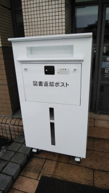

図書館入口の返却ポスト案内
このページは、初めて図書館を利用する学生に向けた案内ページです。
今日の指定語は「入口」です。
図書館入口の右側に、返却ポストがあります。
授業前や昼休みに本を返したいときに確認しておくと便利です。

画像について
今回は実際に撮影した写真なので、画像形式はJPEGを選びました。
画像が表示されない場合でも内容が分かるように、altには場所と写っているものを説明します。
リンクメニュー
詳しい説明を見る
大学図書館の公式サイトを見る